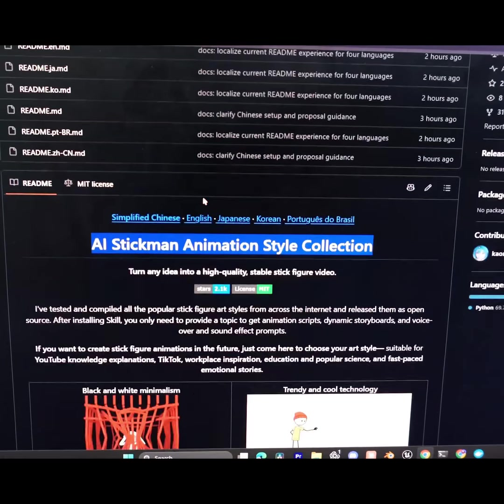
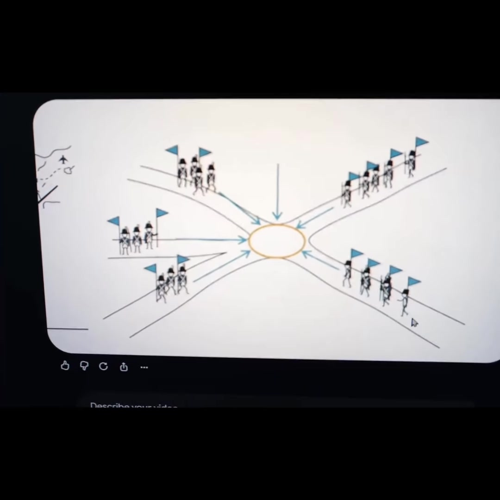
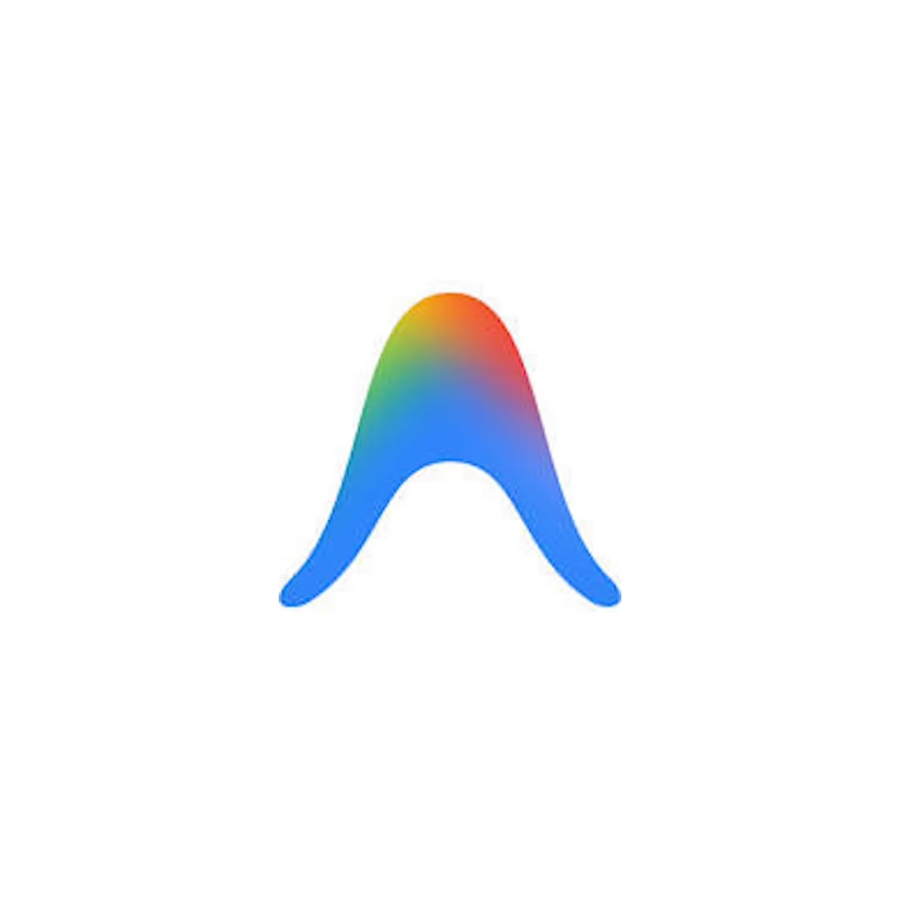

AI · Antigravity-Skills
AI Stickman Video Director: Open-Source Antigravity Agent Skill for Veo 3 Explainer Animations
A specialized Google Antigravity (AGY) agent skill and prompt harness discovered by Normie (@codernormie) based on the open-source GitHub repository AI Stickman Animation Style Collection (referenced as stickman-video-director). Equips autonomous AI coding agents with the capability to generate scripts, dynamic storyboards, sound effect prompts, and render high-retention stick-figure historical battles and scientific explainer videos (popularized by channels like OverSimplified) via Google DeepMind's Veo 3 generative video model.

AI Stickman Animation Style Collection (3.1k stars, MIT License) providing production prompt templates and dynamic storyboard skills for AI agents.Core Capabilities & Pipeline Architecture
-
Skill Integration into Antigravity:
Clone or install the skill manifest into your Antigravity agent configuration (
.agents/skills/stickman-video-director/SKILL.md). This grants the agent domain-specific knowledge of stick-figure composition rules, movement physics, and multi-character staging. -
Topic & Script Generation:
Provide an overarching topic (e.g. The Napoleonic Wars or How Microprocessors Work). The skill instructs the agent to draft:
- Paced Animation Scripts: Conversational, punchy narration with comedic pacing.
- Dynamic Storyboards: Scene-by-scene framing definitions specifying camera movements, character flags, marching routes, and tactical overlays.
- Voice-Over & SFX Prompts: Synchronized acoustic cues for footsteps, drum rolls, musket fire, and comedic sound effects.
- Generative Video Synthesis with Veo 3: The agent feeds the structured style descriptors and storyboards into Google's Veo 3 generative video model, producing coherent, temporal-consistent stick-figure movement without manual animation software.
- Target Formats: Optimized for YouTube historical/knowledge documentaries, TikTok/Reels educational explainers, and fast-paced popular science.
Demonstration & Repository Layout


Verbatim Breakdown
| Time | Spoken Dialogue (Hindi) | On-Screen Text & Repository Evidence |
|---|---|---|
| 00:00 - 00:04 | "Dekho tumhe kuch dikhata hoon. Yeh stick figure animation dekh rahe ho?" | Oversimplified-style stickman animated battle scene with troop movements and flag markers. |
| 00:05 - 00:09 | "Dekho agar tumhe bhi yeh banana hai toh yeh bahut asaan hai. Mujhe iske liye na ek repo mili hai GitHub pe jiska naam hai 'stickman-video-director' karke." | GitHub Repository: AI Stickman Animation Style Collection "Turn any idea into a high-quality, stable stick figure video." Badges: stars 3.1k • license MIT |
| 00:10 - 00:14 | "Yeh na tumhare AI agent ko na yahi stick figure waali animation banane ki skill de deti hai." | Readme excerpt: "After installing Skill, you only need to provide a topic to get animation scripts, dynamic storyboards, and voice-over and sound effect prompts." |
| 00:15 - 00:19 | "And tum chaho toh ise direct Antigravity pe bhi install kar sakte ho, jiski madad se directly Veo 3 ki madad se tumhare liye videos generate kar dega." | Antigravity Agent Skill integration • Google Veo 3 generative video model synthesis. |
| 00:20 - 00:23 | "Baaki comment karo LINK and main tumhe iska link bhej dunga." | CTA: Comment "LINK" for GitHub repository URL. |
Referenced Technologies & Tools
- AI Stickman Animation Style Collection / stickman-video-director: Open-source MIT repository containing curated prompt harnesses, storyboarding templates, and character presets for stick-figure animation.
- Google Antigravity (AGY): Autonomous agent IDE and runtime supporting custom installed skill definitions in
.agents/skills/. - Google DeepMind Veo 3: High-definition generative video foundation model generating temporal-consistent 1080p animation from detailed prompts.
Try This (Setting up in Antigravity)
- Create a new skill folder:
.agents/skills/stickman-video-director/. - Add a
SKILL.mddefining role instructions for script writing, OverSimplified visual rules (minimalist limbs, high-contrast black ink, colored division flags), and Veo 3 prompt parameters. - Prompt the agent:
"Use stickman-video-director to draft a 60-second animated explainer script and Veo 3 scene prompts for the Battle of Marathon." - Review the generated storyboards and submit the prompt sequences to the Veo 3 API or Google AI Studio for batch rendering.